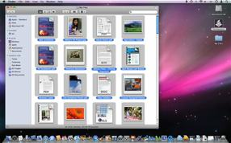
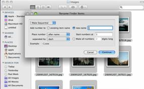

Apple Training Videos
Join Product Manager for Automation Technologies, Sal Soghoian, as he explores creative uses of AppleScript, Services, and Automator.
|
AS001 • Creating AppleScript Droplets  AppleScript scripts can be saved in a variety of formats, including as droplets that process items dragged-onto their icons. Learn how to create these simple but powerful tools. |
AT001 • Creating Batch Renaming Tool  Create an Automator workflow, available from the Finder contextual menu, that functions as a batch renaimng tool for Finder items. |
AT002 • Automator and Remote Desktop Management of networked computers is a task often faced by teachers and IT professionals in companies. Learn how to use Automator and Remote Desktop to automate and simplify the process of controlling groups of computers. |
DISCLAIMER: Mention of third-party websites and products is for informational purposes only and constitutes neither an endorsement nor a recommendation. MACOSXAUTOMATION.COM assumes no responsibility with regard to the selection, performance or use of information or products found at third-party websites. MACOSXAUTOMATION.COM provides this only as a convenience to our users. MACOSXAUTOMATION.COM has not tested the information found on these sites and makes no representations regarding its accuracy or reliability. There are risks inherent in the use of any information or products found on the Internet, and MACOSXAUTOMATION.COM assumes no responsibility in this regard. Please understand that a third-party site is independent from MACOSXAUTOMATION.COM and that MACOSXAUTOMATION.COM has no control over the content on that website. Please contact the vendor for additional information. All videos are linked with the expressed permission of their respective owners.